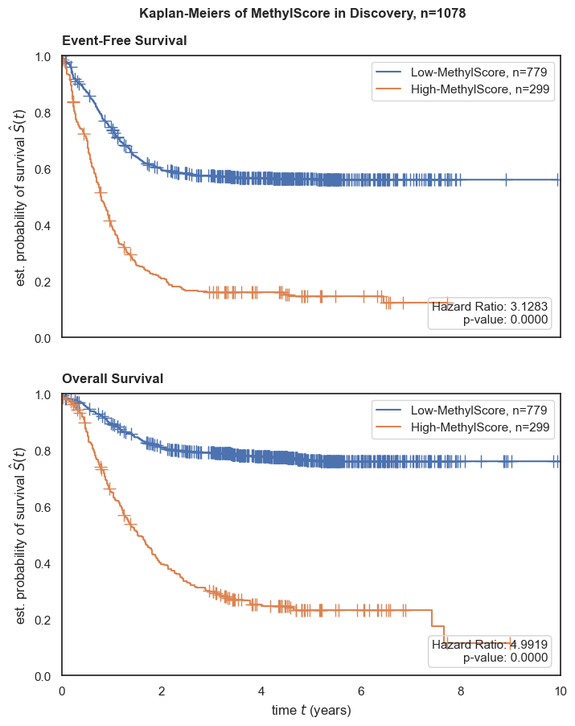
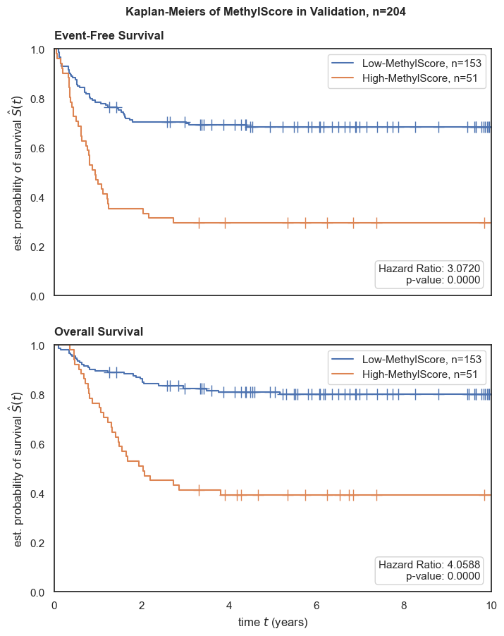
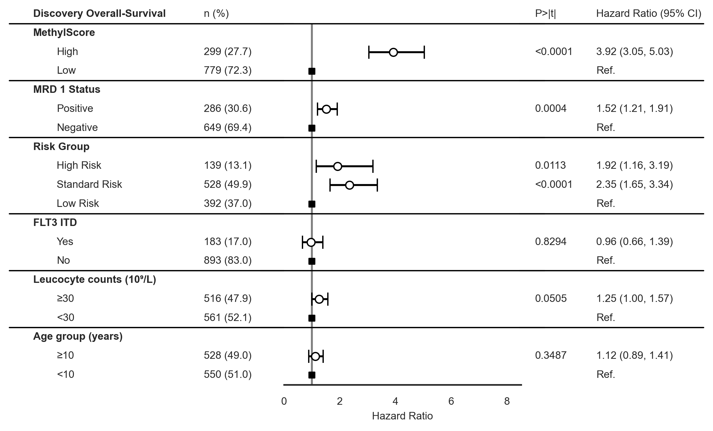
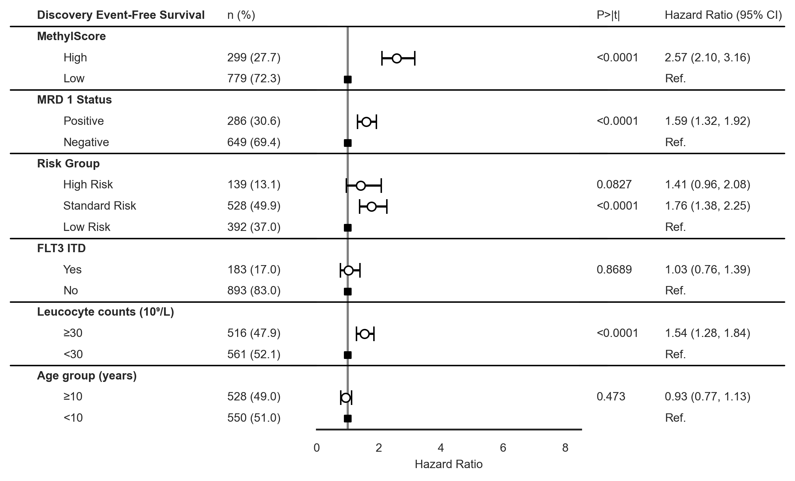
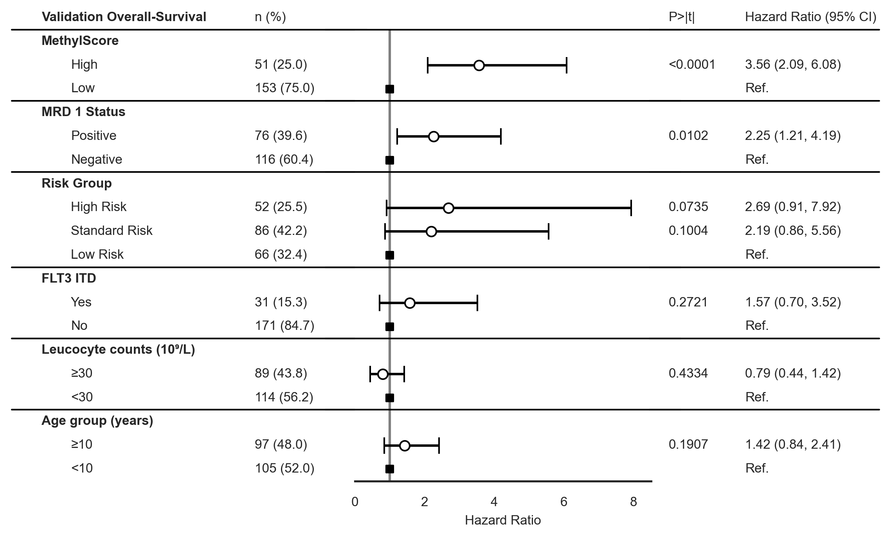
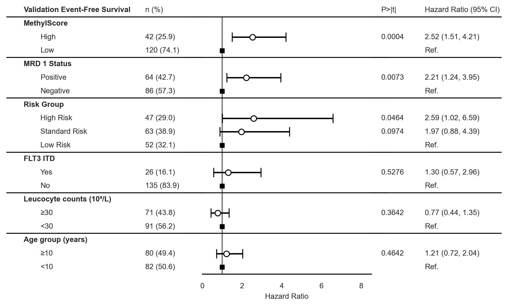

Kaplan Meiers, Forest Plots, Patient Characteristics
Contents
Kaplan Meiers, Forest Plots, Patient Characteristics#
Where the data at?#
input_path = '../Data/Processed_Data/'
output_path = '../Data/Processed_Data/'
Load Datasets#
import pandas as pd
y = pd.read_csv(input_path+'y_MethylScore.csv', index_col=0)
# y = pd.read_csv(input_path+'y.csv', index_col=0)
y_train = y[~y['Clinical Trial'].isin(['AML02','AML08'])]
#y_train2 = y_train[y_train['os.evnt'].notnull()]
y_test = y[y['Clinical Trial'].isin(['AML02','AML08'])]
y_test.shape, y_train.shape
((204, 299), (1093, 299))
# Import Plotting Functions
from FM_Functions.Data_Visualization import *
score_name = "MethylScore"
Kaplan Meiers#
draw_kaplan_meier(scorename=score_name,
df=y_train[~y_train['Clinical Trial'].isin(['AML02','AML08','AML05'])],
save_plot=True,
add_risk_counts=False,
trialname='Discovery')
draw_kaplan_meier(scorename=score_name,
df=y_test,
save_plot=True,
add_risk_counts=False,
trialname='Validation')


Forest Plots#
draw_forest_plot(time='os.time',
event='os.evnt',
df=y_train[~y_train['Clinical Trial'].isin(['AML02','AML08','AML05'])],
trialname='Discovery',
scorename=score_name,
save_plot=True)
draw_forest_plot(time='efs.time',
event='efs.evnt',
df=y_train[~y_train['Clinical Trial'].isin(['AML02','AML08','AML05'])],
trialname='Discovery',
scorename=score_name,
save_plot=True)


draw_forest_plot(time='os.time',
event='os.evnt',
df=y_test,
trialname='Validation',
scorename=score_name,
save_plot=True)

draw_forest_plot(time='efs.time',
event='efs.evnt',
df=y_test[y_test['Clinical Trial'].isin(['AML02'])],
trialname='Validation',
scorename=score_name,
save_plot=True)

Patient Characteristics Table#
from tableone import TableOne
df_all = pd.concat([y_train,y_test], join='outer',keys=['StJude (Validation)','COG (Discovery)']).reset_index(level=0, names='cohort')
columns = ['Age (years)','Age group (years)','Sex','Race or ethnic group',
'Hispanic or Latino ethnic group', 'MRD 1 Status',
'Vital Status', 'Leucocyte counts (10⁹/L)',
'Risk Group','FLT3 ITD']
mytable_all = TableOne(df_all, columns,overall=False,missing=False,pval=True,
order={'FLT3 ITD':['Yes','No'],
'Race or ethnic group':['White','Black or African American','Asian'],
'MRD 1 Status': ['Positive'],
'Risk Group': ['High Risk', 'Standard Risk'],
'FLT3 ITD': ['Yes'],
'Leucocyte counts (10⁹/L)': ['≥30'],
'Age group (years)': ['≥10']},
groupby='cohort')
mytable_all.tabulate(tablefmt="html", headers=['',"",'Validation','Discovery', 'p-value'])
| Validation | Discovery | p-value | ||
|---|---|---|---|---|
| n | 204 | 1093 | ||
| Age (years), mean (SD) | 8.8 (6.0) | 9.4 (6.3) | 0.155 | |
| Age group (years), n (%) | ≥10 | 97 (48.0) | 536 (49.0) | 0.850 |
| <10 | 105 (52.0) | 557 (51.0) | ||
| Sex, n (%) | Female | 86 (42.2) | 546 (50.0) | 0.049 |
| Male | 118 (57.8) | 547 (50.0) | ||
| Race or ethnic group, n (%) | White | 143 (70.8) | 796 (78.3) | <0.001 |
| Black or African American | 35 (17.3) | 117 (11.5) | ||
| Asian | 1 (0.5) | 64 (6.3) | ||
| Native Hawaiian or other Pacific Islander | 2 (1.0) | 6 (0.6) | ||
| Other | 21 (10.4) | 28 (2.8) | ||
| American Indian or Alaska Native | 5 (0.5) | |||
| Hispanic or Latino ethnic group, n (%) | Hispanic or Latino | 25 (12.4) | 203 (19.1) | 0.029 |
| Not Hispanic or Latino | 177 (87.6) | 858 (80.9) | ||
| MRD 1 Status, n (%) | Positive | 76 (39.6) | 286 (30.6) | 0.019 |
| Negative | 116 (60.4) | 649 (69.4) | ||
| Vital Status, n (%) | Alive | 143 (70.1) | 695 (63.6) | 0.088 |
| Dead | 61 (29.9) | 398 (36.4) | ||
| Leucocyte counts (10⁹/L), n (%) | ≥30 | 89 (43.8) | 516 (47.9) | 0.323 |
| <30 | 114 (56.2) | 561 (52.1) | ||
| Risk Group, n (%) | High Risk | 52 (25.5) | 139 (13.1) | <0.001 |
| Standard Risk | 86 (42.2) | 528 (49.9) | ||
| Low Risk | 66 (32.4) | 392 (37.0) | ||
| FLT3 ITD, n (%) | Yes | 31 (15.3) | 198 (18.1) | 0.391 |
| No | 171 (84.7) | 893 (81.9) |
columns2 = ['Age (years)','Age group (years)','Sex','Race or ethnic group',
'Hispanic or Latino ethnic group', 'MRD 1 Status',
'Vital Status', 'Leucocyte counts (10⁹/L)',
'Risk Group','FLT3 ITD','Clinical Trial']
mytable_all = TableOne(y_train, columns2,overall=True,missing=True,pval=False,
order={'FLT3 ITD':['Yes','No'],
'Race or ethnic group':['White','Black or African American','Asian'],
'MRD 1 Status': ['Positive'],
'Risk Group': ['High Risk', 'Standard Risk'],
'FLT3 ITD': ['Yes'],
'Leucocyte counts (10⁹/L)': ['≥30'],
'Age group (years)': ['≥10'],
'Clinical Trial': ['AAML1031','AAML0531','AML05','AAML03P1']},
groupby=None)
mytable_all.tabulate(tablefmt="html", headers=['',"",'Missing','Discovery Cohort'])
| Missing | Discovery Cohort | ||
|---|---|---|---|
| n | 1093 | ||
| Age (years), mean (SD) | 0 | 9.4 (6.3) | |
| Age group (years), n (%) | ≥10 | 0 | 536 (49.0) |
| <10 | 557 (51.0) | ||
| Sex, n (%) | Female | 0 | 546 (50.0) |
| Male | 547 (50.0) | ||
| Race or ethnic group, n (%) | White | 77 | 796 (78.3) |
| Black or African American | 117 (11.5) | ||
| Asian | 64 (6.3) | ||
| American Indian or Alaska Native | 5 (0.5) | ||
| Native Hawaiian or other Pacific Islander | 6 (0.6) | ||
| Other | 28 (2.8) | ||
| Hispanic or Latino ethnic group, n (%) | Hispanic or Latino | 32 | 203 (19.1) |
| Not Hispanic or Latino | 858 (80.9) | ||
| MRD 1 Status, n (%) | Positive | 158 | 286 (30.6) |
| Negative | 649 (69.4) | ||
| Vital Status, n (%) | Alive | 0 | 695 (63.6) |
| Dead | 398 (36.4) | ||
| Leucocyte counts (10⁹/L), n (%) | ≥30 | 16 | 516 (47.9) |
| <30 | 561 (52.1) | ||
| Risk Group, n (%) | High Risk | 34 | 139 (13.1) |
| Standard Risk | 528 (49.9) | ||
| Low Risk | 392 (37.0) | ||
| FLT3 ITD, n (%) | Yes | 2 | 198 (18.1) |
| No | 893 (81.9) | ||
| Clinical Trial, n (%) | AAML1031 | 0 | 520 (47.6) |
| AAML0531 | 508 (46.5) | ||
| AML05 | 15 (1.4) | ||
| AAML03P1 | 36 (3.3) | ||
| CCG2961 | 14 (1.3) |
mytable_all = TableOne(y_test, columns2,overall=True,missing=True,pval=False,
order={'FLT3 ITD':['Yes','No'],
'Race or ethnic group':['White','Black or African American','Asian'],
'MRD 1 Status': ['Positive'],
'Risk Group': ['High Risk', 'Standard Risk'],
'FLT3 ITD': ['Yes'],
'Leucocyte counts (10⁹/L)': ['≥30'],
'Age group (years)': ['≥10'],
'Clinical Trial': ['AML02']},
groupby=None)
mytable_all.tabulate(tablefmt="html", headers=['',"",'Missing','Validation Cohort'])
| Missing | Validation Cohort | ||
|---|---|---|---|
| n | 204 | ||
| Age (years), mean (SD) | 2 | 8.8 (6.0) | |
| Age group (years), n (%) | ≥10 | 2 | 97 (48.0) |
| <10 | 105 (52.0) | ||
| Sex, n (%) | Female | 0 | 86 (42.2) |
| Male | 118 (57.8) | ||
| Race or ethnic group, n (%) | White | 2 | 143 (70.8) |
| Black or African American | 35 (17.3) | ||
| Asian | 1 (0.5) | ||
| Native Hawaiian or other Pacific Islander | 2 (1.0) | ||
| Other | 21 (10.4) | ||
| Hispanic or Latino ethnic group, n (%) | Hispanic or Latino | 2 | 25 (12.4) |
| Not Hispanic or Latino | 177 (87.6) | ||
| MRD 1 Status, n (%) | Positive | 12 | 76 (39.6) |
| Negative | 116 (60.4) | ||
| Vital Status, n (%) | Alive | 0 | 143 (70.1) |
| Dead | 61 (29.9) | ||
| Leucocyte counts (10⁹/L), n (%) | ≥30 | 1 | 89 (43.8) |
| <30 | 114 (56.2) | ||
| Risk Group, n (%) | High Risk | 0 | 52 (25.5) |
| Standard Risk | 86 (42.2) | ||
| Low Risk | 66 (32.4) | ||
| FLT3 ITD, n (%) | Yes | 2 | 31 (15.3) |
| No | 171 (84.7) | ||
| Clinical Trial, n (%) | AML02 | 0 | 162 (79.4) |
| AML08 | 42 (20.6) |
mytable_all = TableOne(y_train, columns,overall=True,missing=True,pval=False,
order={'FLT3 ITD':['Yes','No'],
'Race or ethnic group':['White','Black or African American','Asian'],
'MRD 1 Status': ['Positive'],
'Risk Group': ['High Risk', 'Standard Risk'],
'FLT3 ITD': ['Yes'],
'Leucocyte counts (10⁹/L)': ['≥30'],
'Age group (years)': ['≥10']},
groupby='Clinical Trial')
mytable_all.tabulate(tablefmt="html")
| Missing | Overall | AAML03P1 | AAML0531 | AAML1031 | AML05 | CCG2961 | ||
|---|---|---|---|---|---|---|---|---|
| n | 1093 | 36 | 508 | 520 | 15 | 14 | ||
| Age (years), mean (SD) | 0 | 9.4 (6.3) | 9.6 (5.4) | 9.5 (6.2) | 9.4 (6.6) | 9.9 (4.9) | 6.8 (6.0) | |
| Age group (years), n (%) | ≥10 | 0 | 536 (49.0) | 19 (52.8) | 256 (50.4) | 249 (47.9) | 8 (53.3) | 4 (28.6) |
| <10 | 557 (51.0) | 17 (47.2) | 252 (49.6) | 271 (52.1) | 7 (46.7) | 10 (71.4) | ||
| Sex, n (%) | Female | 0 | 546 (50.0) | 15 (41.7) | 263 (51.8) | 252 (48.5) | 8 (53.3) | 8 (57.1) |
| Male | 547 (50.0) | 21 (58.3) | 245 (48.2) | 268 (51.5) | 7 (46.7) | 6 (42.9) | ||
| Race or ethnic group, n (%) | White | 77 | 796 (78.3) | 24 (70.6) | 384 (79.2) | 376 (80.2) | 12 (92.3) | |
| Black or African American | 117 (11.5) | 6 (17.6) | 51 (10.5) | 59 (12.6) | 1 (7.7) | |||
| Asian | 64 (6.3) | 2 (5.9) | 20 (4.1) | 27 (5.8) | 15 (100.0) | |||
| Native Hawaiian or other Pacific Islander | 6 (0.6) | 2 (5.9) | 1 (0.2) | 3 (0.6) | ||||
| American Indian or Alaska Native | 5 (0.5) | 1 (0.2) | 4 (0.9) | |||||
| Other | 28 (2.8) | 28 (5.8) | ||||||
| Hispanic or Latino ethnic group, n (%) | Hispanic or Latino | 32 | 203 (19.1) | 7 (21.2) | 106 (21.5) | 90 (17.8) | ||
| Not Hispanic or Latino | 858 (80.9) | 26 (78.8) | 388 (78.5) | 415 (82.2) | 15 (100.0) | 14 (100.0) | ||
| MRD 1 Status, n (%) | Positive | 158 | 286 (30.6) | 12 (42.9) | 126 (30.1) | 148 (30.3) | ||
| Negative | 649 (69.4) | 16 (57.1) | 293 (69.9) | 340 (69.7) | ||||
| Vital Status, n (%) | Alive | 0 | 695 (63.6) | 19 (52.8) | 318 (62.6) | 346 (66.5) | 8 (53.3) | 4 (28.6) |
| Dead | 398 (36.4) | 17 (47.2) | 190 (37.4) | 174 (33.5) | 7 (46.7) | 10 (71.4) | ||
| Leucocyte counts (10⁹/L), n (%) | ≥30 | 16 | 516 (47.9) | 20 (55.6) | 251 (49.4) | 241 (46.4) | 4 (28.6) | |
| <30 | 561 (52.1) | 16 (44.4) | 257 (50.6) | 278 (53.6) | 10 (71.4) | |||
| Risk Group, n (%) | High Risk | 34 | 139 (13.1) | 4 (11.4) | 66 (13.2) | 65 (12.7) | 4 (36.4) | |
| Standard Risk | 528 (49.9) | 22 (62.9) | 223 (44.6) | 277 (54.0) | 6 (54.5) | |||
| Low Risk | 392 (37.0) | 9 (25.7) | 211 (42.2) | 171 (33.3) | 1 (9.1) | |||
| FLT3 ITD, n (%) | Yes | 2 | 198 (18.1) | 8 (22.2) | 76 (15.0) | 95 (18.3) | 15 (100.0) | 4 (28.6) |
| No | 893 (81.9) | 28 (77.8) | 430 (85.0) | 425 (81.7) | 10 (71.4) |